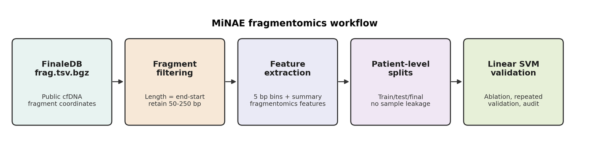
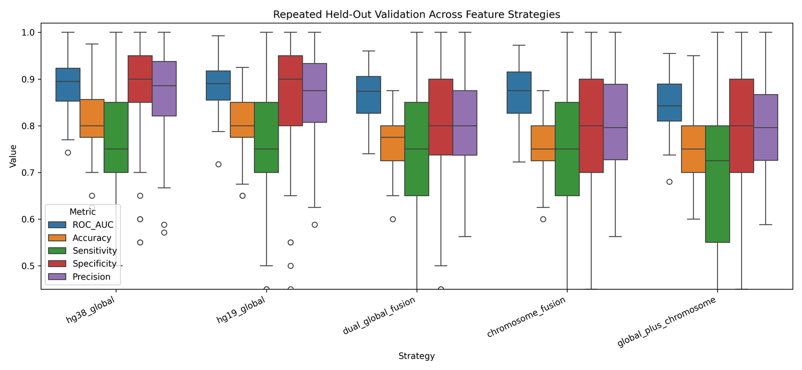
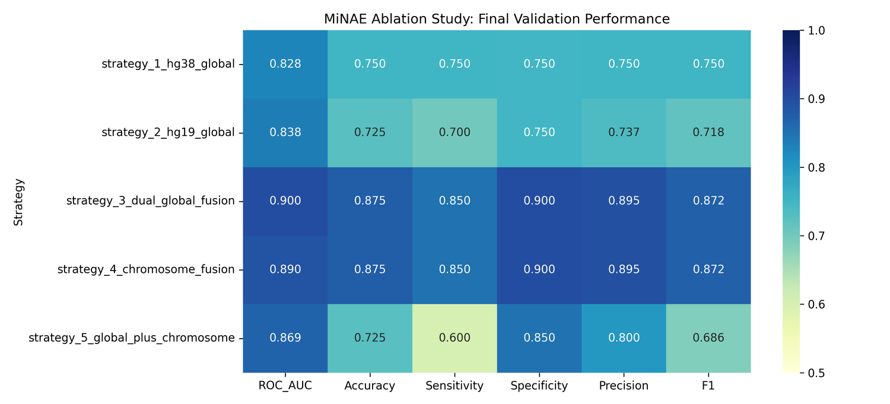
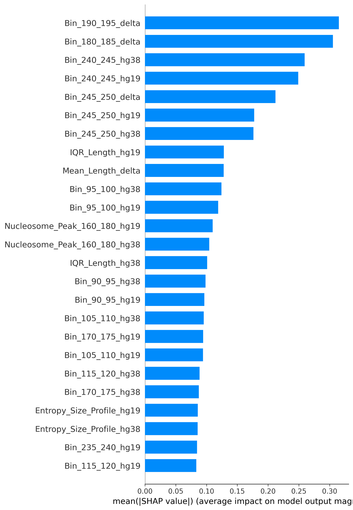
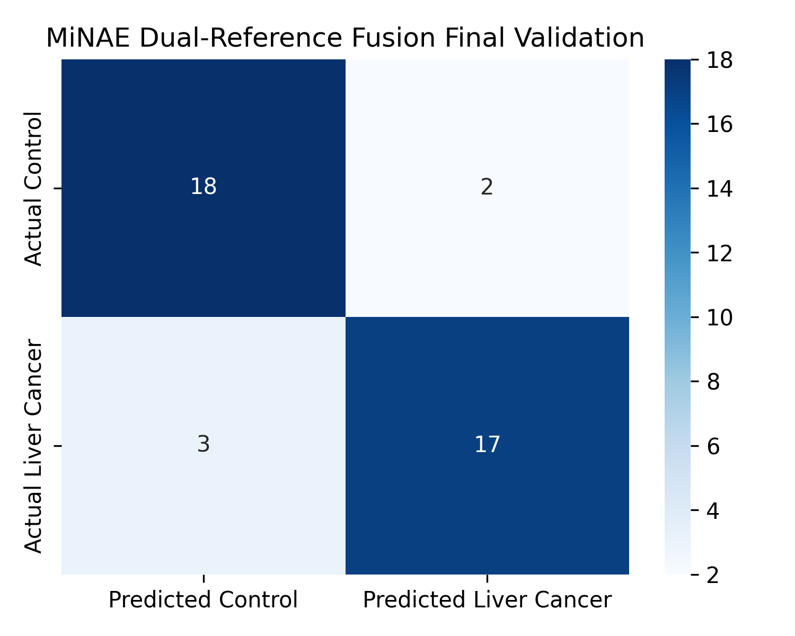

MiNAE
Mutation-independent Nucleosome Architecture Evaluation
MiNAE is a cfDNA fragmentomics framework for hepatocellular carcinoma detection. Instead of searching for tumor mutations, it studies the physical size patterns of cell-free DNA fragments and asks whether those patterns distinguish liver cancer from chronic liver disease controls such as cirrhosis and hepatitis B.
The analysis uses public FinaleDB fragment-coordinate files and keeps the claim deliberately bounded: MiNAE is not a clinical diagnostic. It is a patient-level validation and auditing framework designed to show what cfDNA fragment-size architecture can and cannot prove from public coordinate-level data.
176 patients
HCC vs cirrhosis/HBV
ROC/PR curves
ablation study
SHAP
technical audit
cfDNA fragmentomics
hepatocellular carcinoma
liquid biopsy ML
patient-level validation
clinical-confounder controls
fragment-size signatures
technical-confounder audits
external replication
diagnostic modeling
translational genomics
cfDNA fragmentomics
hepatocellular carcinoma
liquid biopsy ML
patient-level validation
clinical-confounder controls
fragment-size signatures
technical-confounder audits
external replication
diagnostic modeling
translational genomics
What it does
From compressed fragment coordinates to leakage-aware patient predictions.
Ingest fragment-coordinate data
Reads public FinaleDB cfDNA fragment-coordinate files from liver cancer, cirrhosis, and hepatitis B sample groups.
Calculate fragment lengths
Computes the physical DNA fragment length as genomic end minus genomic start, then filters likely artifacts.
Build size-profile features
Turns millions of raw rows into patient-level normalized fragment-size fingerprints.
Validate with clinical controls
Tests whether the model separates HCC from chronic liver disease rather than from perfectly healthy samples.
Prevent reference-build leakage
Groups hg19 and hg38 versions of the same biological sample before splitting so one patient cannot appear in both training and validation.
Audit the signal
Compares feature strategies, repeated splits, permutation tests, external fragment-length replication, and technical negative controls.
Validation logic
The project became stronger when it stopped chasing one lucky score.
The most important improvement was moving beyond a single train-test split. MiNAE now includes ablation studies, repeated validation, PR-AUC, confusion matrices, SHAP interpretation, external replication audits, and explicit technical-confounder checks.
Clinical comparator
The final cohort used 89 HCC cases and 87 chronic liver disease controls, including 66 cirrhosis and 21 hepatitis B samples.
Ablation study
Compares hg38 global, hg19 global, dual-reference fusion, chromosome-focused features, and combined strategies.
Interpretability
SHAP and selected-feature heatmaps help show which fragment-size features drive the classifier.
Honest limitation
External datasets were useful for fragmentomics replication and auditing, but not a perfect HCC reproduction cohort.
Research value
The useful part is not only the score. It is the validation discipline.
MiNAE is strongest when read as an example of how a public biomedical dataset should be tested. The locked split showed strong HCC separation, but the repeated validation told a more careful story: simpler hg38 global fragmentomics was the most stable strategy across randomized patient-level splits.
What worked
Dual-reference global fusion reached 0.900 ROC-AUC, 0.873 PR-AUC, 0.875 accuracy, 0.850 sensitivity, and 0.900 specificity on the locked final validation set.
What generalized better
Across 100 repeated validations, the simpler hg38 global model was more stable, with mean ROC-AUC 0.889 and mean PR-AUC 0.912.
What reviewers would ask
A technical negative-control model was also predictive, so the website and manuscript frame MiNAE as a retrospective audit, not a deployable clinical test.
What it teaches
Fragmentomics appears measurable in public data, but credible biomedical ML needs patient-level splitting, ablation, PR curves, external checks, and confounder analysis.
Figures
Selected visual evidence from the MiNAE analysis.






Tools and data resources
The technical stack behind MiNAE.
The project used public coordinate-level cfDNA data and standard scientific Python tooling to build, validate, visualize, and audit the fragmentomics pipeline.
Public de-identified cfDNA fragment-coordinate files.
Feature extraction, validation scripts, and analysis workflow.
Patient-level feature tables and matrix handling.
Numerical feature normalization and array operations.
Linear SVM, feature selection, metrics, and repeated validation.
Feature-level interpretability for fragment-size signals.
ROC, PR, heatmap, confusion-matrix, and validation figures.
Notebook-style experimentation and portable model runs.
Public manuscript status
Draft available by request, not publicly posted yet.
Because MiNAE is being prepared for conference submission, I am not publicly linking the full draft manuscript here. A project page with methods, figures, and an email request link is safer until acceptance or formal preprint posting.